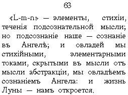
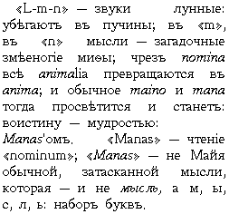
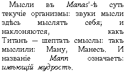
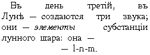

Glossolalia (Section 63)
GLOSSOLALIA

"L-m-n" are -- elements, the basic elements, currents of subconscious thought; but our subconsciousness is -- consciousness in an Angel; and if we could gain control of the elemental, elementary currents, which have been concealed in thought from the thought of abstraction, we would take control of the consciousness of the Angel; and the life of the Moon -- would open itself to us.

"L-m-n" are -- lunar sounds; they run off to the abysses/gulfs; in "m," in "n" thoughts are -- puzzling serpent-legged myths; via nomina all animalia are transformed into anima; and the common maino and mana then will be illuminated and become: verily -- wisdom: Manas. "Manas" is -- reading the "nominum"; "Manas" is -- not Maia of the common, of hackneyed mental thought, which isn't -- mental, but m, e, n, t, a, l: a collection of letters.

Mental thoughts in Manas are flowing organisms: sounds of the mental here mentalize themselves; and they incline, like Titan -- to whisper meanings: thus did they mentalize; Mana, Manes. And the name Mann signifies: wisdom that is mine.

On the third day, on the Moon -- three sounds are created; they are -- elements of the substance of the lunar sphere: this substance is --
-- l-m-n.